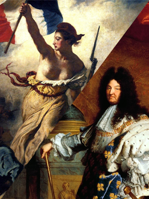

Mes Passions
 |
L'Esport et les Jeux VidéosDepuis tout petit je joue à des jeux vidéos, j'ai commencé par des jeux éducatifs et des jeux solo, en primaire je me suis mis à jouer à Dofus puis à Minecraft au collège, en 3ème j'ai découvert league of legends et j'ai tout de suite accroché au jeu, j'ai très rapidement découvert l'esport que je regarde depuis maintenant 4 ans et qui m'ont fait passer par toutes les émotions ! |
La Politique et l'actualitéLe 11 mars 2011 j'ai découvert les chaines d'informations en continu car j'était fasciné par les images du Tsunami au Japon. J'ai par la suite affiné mes sources d'informations au fur et à mesure que je grandissait, par la suite j'ai commencé à apprécier la politique et l'ambiance des soirées électorales. Depuis je suit tout ça de très près ! |
|
|  |
L'histoireJ'ai toujours été un enfant qui adore quand on lui raconte des histoires, dès le début des cours d'histoire en primaire j'était fasciné par ce que l'on me racontait, durant toute ma scolarité j'ai adoré les cours d'histoire (Même si les profs n'étaient pas toujours très bons). De mon coté je me suis mis à apprendre via des livres ou des émissions télé. Aujourd'hui j'apprécie toujours autant les histoires et apprendre des choses. |
Facebook
Twitter
Instagram